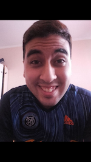

Matias Dominguez | WDD130
Hello! My name is Matias Dominguez and I am from San Juan,Argentina. I am happy to participate in this course and learn new skills.
Hello! My name is Matias Dominguez and I am from San Juan,Argentina. I am happy to participate in this course and learn new skills.